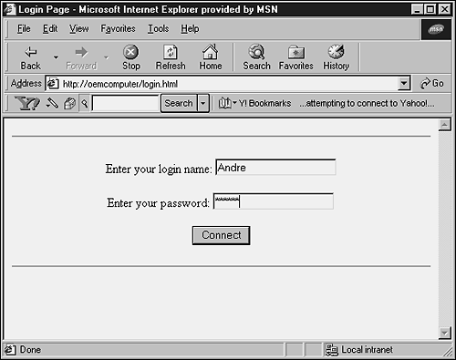

| < BACK | Make Note | Bookmark | CONTINUE > |
Creating, Installing, and Running Your Script
You are free to edit your Python scripts using your favorite text editor (such as, Notepad, IDLE, Editpad, pico, PythonWwin, vi, and so on). Of course, we can't forget about Emacs, which has one of the best Python editing modes available.
Remember to upload your scripts as text files to your Web server. In order to execute them, you need to make sure that they are in a "executable" directory, and that they have the right permissions.
As I said before, most often CGI scripts live in the server's special cgi-bin directory. You should consider verifying whether the files, that your script needs to read or write, are actually readable or writable, respectively, by other users. In UNIX, the command to set the permissions is chmod.
For example,
chmod 755 filename
The mode argument 755 defines that the file's owner can read, write, and execute the file, whereas the other users can only read and execute it.
The common UNIX mode values and their respective symbolic arguments are
-
chmod 755 for executable scripts, or chmod a+rx.
-
chmod 666 for writable files, or chmod a+w.
Tip
Keep in mind that commands and filenames are all case sensitive if the Web Server is on an OS with case-sensitive filenames.
For security reasons, the HTTP server executes your script as user "nobody", without any special privileges. Therefore, it can only read (write, execute) files that everybody can read (write, execute).
The current directory at execution time is usually the server's /cgi-bin directory, and the set of environment variables is different from what you get at login. In other words, don't count on the shell's search path variable for executables ($PATH) or the Python module search path variable ($PYTHONPATH) to be set to anything useful.
If you need to load modules from a directory that is not listed as part of the Python's default module search path, you can change the path variable in your script before trying to import them. In the following example, we add three more directory entries in the search path. Note that the last directory inserted, "/usr/python/testdict", is searched first.
import sys sys.path.insert(0, "/usr/python/lib") sys.path.insert(0, "/usr/tmp") sys.path.insert(0, "/usr/python/testdict")
Instead of using "from cgi import *", you should use only "import cgi" because the cgi module defines many other names for backward compatibility that can interfere with your code.
It also might be useful for you to redirect the standard error (sys.stderr) to the standard output (sys.stdout). This will display all the error messages in the browser.
Sending Information to Python Scripts
Every time you use a URL to carry information to a CGI script, the data is transported as name/value pairs, separated by ampersands (&), and each pair is separated by an equal sign (=). Whitespaces between words are usually converted to the plus symbol (+).
For example,
http://www.lessaworld.com/cgi-script/app.py?animal=Parrot&type=Singer
Special characters are encoded to hexadecimal format (%HH) and preceded by the percent sign. Therefore, the string "Parrot sketch" is passed to the script as "Parrot%20sketch".
As you can see, the previous example is implicitly using the GET method to pass the values to the CGI script. If you decide that the POST method is more suitable for your needs, you will need to use the urllib module in order to send the information. The following example demonstrates its use.
import urllib
request = urllib.urlencode({
"animal": "Parrot", "type": "Singer"
})
page = urllib.urlopen("http://oemcomputer/cgi-script/app.py", request)
response = page.read()
Check the urllib documentation for details:
http://www.python.org/doc/current/lib/module-urllib.html
Table 12.1 contains a list of special characters and their encoded strings.
| Character | Encoded String |
|---|---|
| / | %2F |
| ~ | %7E |
| : | %3A |
| ; | %3B |
| @ | %40 |
| & | %26 |
| space | %20 |
| return | %0A |
| tab | %09 |
Working with Form Fields and Parsing the Information
The first thing that most beginners in the Web development area want to know is how to get information out of HTML forms and do something with it.
The following HTML code results in a Web page (see Figure 12.1) that queries the user about his login information. Note that we use the POST method in the form. Thus, the field values will not be displayed as part of the URL.
Figure 12.1. Login Form that calls a CGI script.
<HTML> <HEAD><TITLE>Login Page</TITLE></HEAD> <BODY> <HR> <CENTER> <FORM method="POST" action="http://oemcomputer/cgi-bin/login.py"> <p> Enter your login name: <input type="text" name="login"> <p> Enter your password: <input type=password name="password"> <p> <input type="submit" value="Connect"> </FORM> </CENTER> <HR> </form> </BODY> </HTML>
Also, pay attention to the way data fields are referenced in HTML forms. Each input element carries a name attribute that uniquely identifies the element within a form. For instance, the tag <input type="text" name="login"> defines a data field called "login" that implements a text box.
Every CGI script must send a header (the Content-type tag) describing the contents of the document. The common values for this tag are text/html, text/plain, image/gif, and image/jpeg. A blank line is used to indicate the end of this header.
As you can see, a script is really executed, and not just displayed in the browser. Everything printed to sys.stdout by the script is sent to the client browser, whereas error messages go to an error log (/usr/local/etc/httpd/logs/error_log in Apache).
The following script is the CGI program called by the HTML form from the previous code.
1: #!/usr/local/bin/python
2: import cgi
3:
4: def header(title):
5: print "Content-type: text/html\n"
6: print "<HTML>\n<HEAD>\n<TITLE>%s</TITLE>\n</HEAD>\n<BODY>\n" \
7: % (title)
8:
9: def footer():
10: print "</BODY></HTML>"
11:
12: form = cgi.FieldStorage()
13: password = "python"
14:
15: if not form:
16: header("Login Response")
17: elif form.has_key("login") and form["login"].value != "" and \
18: form.has_key("password") and form["password"].value == password:
19: header("Connected …")
20: print "<center><hr><H3>Welcome back," , form["login"].value, \
21: ".</H3><hr></center>"
22: print r"""<form><input type="hidden" name="session" value="%s">
23: </form>""" % (form["login"].value)
24: print "<H3><a href=browse.html>Click here to start \
25: browsing</a></H3>"
26: else:
27: header("No success!")
28: print "<H3>Please go back and enter a valid login.</H3>"
29:
30: footer()
This example first verifies if the form is a valid form (line 15). If it isn't, a blank screen is displayed. If the fields have a valid format, the form performs an action and processes the results (lines 17–25). The last case is when the validation rule is not followed, and an error message must be displayed. A full implementation should repeat the form, and point out the error to the user.
Next, we have a simple check list to use while developing CGI scripts. It shows the basic structure of CGI script creation.
-
Use cgi.FieldStorage() to parse the query.
-
Check the HTML form fields.
-
Take care of decoding, handling both GET and POST methods.
-
Perform the actions that are particular to your application.
-
Generate the proper HTTP/HTML data for output. The simplest way to write to the output is using print statements. Note that template solutions are also available, and for high-volume sites, it's almost a necessary implementation.
The following example is a small variation of the previous script. This one lists the values of all form fields.
#!/usr/local/bin/python
import cgi
def header(title):
print "Content-type: text/html\n"
print "<HTML>\n<HEAD>\n<TITLE>%s</TITLE>\n</HEAD>\n<BODY>\n" % (title)
def footer():
print "</BODY></HTML>"
form = cgi.FieldStorage()
formkeys = form.keys()
formkeys.sort()
header("Show form fields")
print '<UL>'
for k in formkeys:
print '<LI>'+ k + ':'+ form[k].value + '</LI>'
print '</UL>'
footer()
The next example demonstrates that if you try to access a field that doesn't exist (line 15), an exception is generated. If you don't catch the exception with a try/except statement, this will stop your script, and the user will see a message like "Internal Server Error". Also, note that the cgi dictionary of attribute/value pairs does not support the values() method (line 14).
1: #!/usr/local/bin/python 2: import cgi 3: 4: def header(title): 5: print "Content-type: text/html\n" 6: print "<HTML>\n<HEAD>\n<TITLE>%s</TITLE>\n</HEAD>\n<BODY>\n" / 7: % (title) 8: 9: def footer(): 10: print "</BODY></HTML>" 11: 12: form = cgi.FieldStorage() 13: print form.keys() # ['password', 'login'] 14: # print form.values() # Causes an error 15: # print form["hostname"].value # Causes an error 16: 17: footer()
Security
You have to watch out when passing fields to the shell. Never pass any string received from the client directly to a shell command. Take a look at the following statement:
os.popen("dir %s" % form["filename"].value)
Now, imagine if the user types something like *.* | del *.exe.
In order to solve problems like this, you have a few different kinds of approaches. We will look some of them. First, you can choose to quote the variable:
filename = pipes.quote(form["filename"].value)
A second solution is to get rid of every character that is not part of the acceptable domain of values.
filename = re.sub(r"\W", "", form["filename"].value)
Note
You should test for acceptable input, rather than for unacceptable input. You don't want to get caught by surprise when someone thinks of some input string you didn't think of, or exploits a bug you don't know about.
The third, and most radical, solution is to test the form, and return an error message in case a valid condition is not established. For example,
if not re.match(r"^\w+$", filename):
raise "Invalid file name."
If you invoke an external program (for example, via the os.system() or os.popen() functions), make very sure that you don't pass arbitrary strings received from the client to the shell. It is a bad idea to use form data provided by random people on the Web without validating it; especially if you're going to use that data to execute a system command or for acting on a database. Naively written CGI scripts, in any language, are favorite targets for malicious system crackers. This is a well-known security hole whereby clever hackers anywhere on the Web can exploit a naive CGI script to invoke arbitrary shell commands. Even parts of the URL or field names cannot be trusted because the request doesn't have to come from your form.
To be on the safe side, if you must pass a string that you have gotten from a form to a shell command, you should make sure that the string contains only alphanumeric characters, dashes, underscores, and periods.
Sessions
If you need to correlate requests from the same user, you must generate and assign a session key on the first contact of the user, and incorporate this session key in the next forms, or in the URLs.
If you implement the first solution, you need to use a hidden input field.
<input type="hidden" name="session" value="74ght2o5">
If you decide that the second option will work better for you, you need to add the information after the script's name (separating with a slash).
http://lessaworld.com/cgi-bin/dosomething.py/74ght2o5
The information is passed to the CGI script through the environment variables, as you can see next.
os.environment["PATH_INFO"] = "74ght2o5" os.environment["PATH_TRANSLATED"] = "<rootdir>/74ght2o5"
Data Storage
The information manipulated by CGI scripts can come from any kind of data storage structure. The important thing to keep in mind is that your data must be capable of being managed and updated.
You have a number of options to use here. Plain files are the simplest way. Shelves can be used too—they are used to store whole Python objects, which avoids the parsing/unparsing of values. If you decide to go through dbm (or gdbm) files, you will find better performance as they use strings for key/value manipulations. If you really want to think about scalability or speed, you should consider choosing a real database. You can use the information that is provided in Chapter 8, "Working with Databases," to help you define which database would be the best solution for your case.
If you don't have a real database in hands, don't worry. A number of sites only use plain file databases, and they don't have anything to complain about.
Locking
Whenever you are not working with real solution database systems, locking problems can drive you nuts because you have to worry about every single detail. For example, shelves and dbm (or gdbm) database files have no protection against concurrent updates.
In order to implement a good and efficient locking solution in Python, the best approach is to write a routine that locks only when writing to the file. Python handles multiple readers well, and when it comes to a single writer, Python can support it too.
In order to study a complex implementation of a locking algorithm, you should consider seeing the Mailman source-code (precisely, the LockFile.py file). Although this routine does not run on Windows systems, it works well on UNIX machines, and besides, it supports NFS.
We all know how hard it is to implement a good locking solution. Occasionally your process dies, and you lose the pointer to the locked file; other times you see your program hanging because the process took longer than expected.
Cookies
A cookie is a piece of data that the Web Server asks the client to store on their system, which gets sent back to the server on subsequent visits. One use of cookies is to store customized information that belongs to the user who owns the browser.
Each time you visit a Web site that uses cookies, the server application is able to check for cookies in the client site by inspecting the HTTP header. If cookies are available, the client sends back all appropriate cookies for every request to the server.
The CGI script can update cookies at any time necessary, just before sending a Web page to the client browser. The format used to move cookies back and forth is the same one used for GET and POST requests.
In order to correlate sessions from the same user, you can also put cookies in the user's browser. This is very controversial, but useful. Keep in mind that many people turn off the use of cookies in their browsers. Thus, you cannot count on them in your applications. You should always have a solution ready in case the user's browser doesn't accept cookies.
Caution
If you have something to hide, it becomes very important to store the information in the cookies in a security format. You cannot let the user go to the cookies.txt file, which stores all the cookies information in the client machine, and change anything. In order to prevent that, you should consider storing the cookies using an encryption algorithm. Another important warning is that you shouldn't blindly trust the value of the cookie, the same as you shouldn't trust form variables.
In order to handle cookies in Python, Tim O'Malley has created a module called Cookie.py that is able to write Set-Cookie headers and parse the HTTP_COOKIE environment variable.
The following example demonstrates the use of cookies using the Cookie module.
The Cookie.py Module
Python has this module called Cookie.py, which basically handles everything that you might need to worry about for what concerns cookies.
Cookie.Cookie()
This class enables the creation of a cookie object.
>>> import Cookie >>> mycookie = Cookie.Cookie() # Create a new cookie
A cookie object generated by the Cookie.py module has a dictionary-like behavior. It exposes the following properties and methods, supporting all cookie attributes defined by RFC 2109.
mycookie['username'] = "Andre Lessa" # Assign a value to a cookie
mycookie["books"] = 2 # automatically pickles non-string
# objects (using cPickle or pickle)
mycookie["username"].value # Returns the value associated with the
# key.
"Andre Lessa"
print mycookie
Set-Cookie: books="I2\012.";
Set-Cookie: username="Andre Lessa";
Note that the print statement must be executed before the content-type header.
cookie.output()
This method outputs the contents of a cookie. You can also change the printable representation if you want.
mycookie.output()
'Set-Cookie: books="I2\\012.";\012Set-Cookie: username="Andre Lessa";'
mycookie.output("Cookie Attributes:")
'Cookie Attributes: books="I2\\012.";\012Cookie Attributes: username="Andre
Lessa";'
cookie.load()
This method is used to extract cookies from a given string. You won't have a problem using escaped quotation marks and nested semicolons in the string.
mycookie.load("userid=alessa;")
print mycookie
Set-Cookie: books="I2\012.";
Set-Cookie: username="Andre Lessa";
Set-Cookie: userid=alessa;
mycookie.load('username=\"JP Lessa\";books=4;cds=1')
print mycookie
Set-Cookie: cds=1;
Set-Cookie: userid=alessa;
Set-Cookie: books=4;
Set-Cookie: username="JP Lessa";
mycookie.load('dvds="I3\\012.";') # automatically unpickles pickled
# objects.
mycookie["dvds"].value # returns the true value, instead of the
# encoded representation.
3
print mycookies
Set-Cookie: cds=1;
Set-Cookie: userid=alessa;
Set-Cookie: books=4;
Set-Cookie: dvds="I3\012.";
Set-Cookie: username="JP Lessa";
Cookie.net_setfunc() and Cookie.user_setfunc()
These two functions are defined in the Cookie module to help you encode and decode the contents of your cookies. Cookie.net_setfunc() takes in an encoded string and returns a value. On the other hand, Cookie.user_setfunc() takes in a value and returns the original encoded string.
Note that you are not obliged to use their implementations. You can override them at anytime, just by subclassing the Cookie() class, and redefining these methods. For more information, check out the following:
Cookie protocol—Netscape's documentation
http://devedge.netscape.com/li brary/documentation/communicator/jsguide4/cookies.htm
Cookie.py—Python Module created by Tim O'Malley
ftp://ftp.bbn.com/pub/timo/python/Cookie.py
Creating Output for a Browser
You already know that straightforward print statements do a good job of sending information to the user's browser.
Tip
Check out Chapter 10, "Basic Network Background," for details about some third-party modules that automatically generate HTML code for you.
Now, what about redirecting people from one page to another? In the next example, as soon as a browser sees the Location: header, it will stop and try to retrieve the new page.
new_location = 'http://www.python.org/' print 'Status: 302 Redirected' print 'Location: %s\n'% new_location
Maybe you are tired of just sending text to the user. What about sending images?
The next example demonstrates how you can output graphics, such as GIF files, using CGI scripts. As you can see, you just need to specify the correct MIME-type in order to tell the browser that you are sending an image.
import sys
gifimage = open('check.gif','rb').read()
# print HTTP headers
sys.stdout.write('Content-type: image/gif\n')
# print end-of-headers
sys.stdout.write('\n')
# print image
sys.stdout.write(gifimage)
Caution
Note that you cannot use print image because it would append a newline or a blank to the data, in case you use print image, (with the comma at the end), and the browser would not understand it.
The previous simple example takes an existing GIF image file and processes it. Keep in mind that it is also possible to produce dynamic graphics images through Python code, using the Python Imaging Library.
See http://www.python.org/sigs/image-sig/Imaging.html for details.
Using Templates
CGI programs usually contain many blocks of HTML code embedded within the scripts. This is a problem for many teams of HTML designers and developers. Imagine the case in which both kinds of professionals need to make changes in the same file, at the same time. This kind of situation can generate many accidental errors in the code.
The most common solution for this kind of trouble is to separate the Python code from the HTML code by using template files. In a later stage, the HTML template can be mixed with Python code using either formatting substitution or Python's regular-expression.
The basic idea is after you have finished reading the template file, replace all special placeholders, such as <!-- # INSERT HERE # -->, with the correct values.
Listing 12.1 defines a simple template that is going to be used by our Python script. Of course, real-production templates are more complex than this one.
Listing 12.1 file: template1.html
<html>
<head>
<title>My Application</title>
</head>
<body>
<H1><center><!-- # INSERT HERE # --></center></H1>
</body>
</html>
Note the customized tag tag>><!-- # INSERT HERE # -->. If you just open this template file, nothing will show up. However, after you run the script, the program will search for this tag and replace it with our new content before displaying to the users.
Next, you have the CGI script that makes everything possible. This script reads the entire template file, storing it in memory. Then, after applying a regular expression substitution, it swaps our special tag with the new content.
1: import re
2: filename = "template1.html"
3: TemplateException = "Error while parsing HTML template"
4: newContent = "Hello Python World"
5: filehandle = open(filename, "r")
6: data = filehandle.read()
7: filehandle.close()
8: matching = re.subn("<!-- # INSERT HERE # -->", newContent, data)
9: if matching[1] == 0:
10: raise TemplateException
11: print "Content-Type: text/html\n\n"
12: print matching[0]
Line 1: Makes the regular expression module available.
Line 2: Specifies the filename of the template file.
Line 3: Defines an exception that is raised when no replacements are made.
Line 4: Contains the string to replace.
Line 6: Reads the entire file as a string.
As I told you before, another possibility is to use formatting substitution. In this new scenario, we have to write the template file as shown in Listing 12.2.
Listing 12.2 file: template2.html
<html> <head> <title>My Application</title> </head> <body> <b>Student:</b> %(student)s<br> <b>Class:</b> %(class)s<br> <hr> Sorry, your application was <font color=red>refused</font>.<br> If you have any questions, please call:<br> <center>%(phone)s</center> <hr> </body> </html>
The script necessary to handle this new format is correctly listed next. The main difference is that in this new script, you have to declare a dictionary that will be used to map the placeholders in the template file.
filename = "template2.html"
dictemplate = { 'student': 'Andre', 'class': 'Math', 'phone': '555-5553'}
filehandle = open(filename, "r")
data = filehandle.read()
filehandle.close()
print "Content-Type: text/html\n\n"
print data % (dictemplate)
Uploading/Uploaded Files
Sometimes, it is necessary to receive files from users through the Web. This next example shows how to send a file across an HTTP connection using an HTML page, and how to later interpret it.
import cgi
form = cgi.FieldStorage()
if not form:
print "Content-Type: text/html"
print
print """
<form action = "/cgi-bin/uploadfiles.py" method="POST"
enctype="multipart/form-data">
<input type="file" name="filename">
<input type="submit">
</form>
"""
elif form.has_key("filename"):
item = form["filename"]
if item.file:
data = item.file.read()
print "Content-Type: text/html"
print
print cgi.escape(data)
When a certain form field represents an uploaded file, the value attribute of that field reads the entire file in memory as a string. Sometimes, this might not be what you really want. Another way to get the information is to test for an uploaded file by checking either the filename attribute or the file attribute. You can then read the data, at your convenience, from the file attribute.
Note
The enctype="multipart/form-data" part is very important because without it, only the filename is transmitted.
The next example is a slight variation of the previous example. This one assumes that you have a form with a field called filename that will transport a user file to the CGI script, and then it reads the uploaded file, line by line.
import cgi
form = cgi.FieldStorage()
if not form:
print "Content-Type: text/html\n\n"
print """
<form action = "/cgi-bin/uploadingfile.py" method="POST"
enctype="multipart/form-data">
<input type="file" name="filename">
<input type="submit">
</form>
"""
elif form.has_key("filename"):
uploadedfile = form["filename"]
if uploadedfile.file:
print "Content-Type: text/html\n\n"
linecounter = 0
while 1:
line = uploadedfile.file.readline()
print line
if not line:
break
linecounter = linecounter + 1
cgiupload.py
The cgiupload module is a simple attempt to upload files via HTTP. Although the mechanism is not as efficient as other protocols (for example, FTP), there are circumstances where using the http protocol has advantages such as when a user login/password is not required, or when using firewalls because most firewalls allow the HTTP protocol to pass through. Note that HTTP file upload is about as efficient as email attachments.
A short description with code about how to upload files via CGI is available at
http://starship.python.net/crew/jbauer/cgiupload/index.html
Note that Python's module "ftplib" provides better performance to transmit files over the network.
Zope also provides a mechanism to perform CGI file uploads. Check out the Web site at
Environment Variables
Environment variables are one of the methods that Web servers use to pass information to a CGI script. They are created and assigned appropriate values within the environment that the server produces for the CGI script.
The next code generates a list of all environment variables that you have available at the moment, in your browser.
import os
print "Content-type: text/html\n"
print "<HTML><HEAD><TITLE>List of Environment Variables</TITLE></HEAD>"
print "<BODY>"
for k,v in os.environ.items():
print "%s => %s<BR>" % (k,v)
print "</BODY></HTML>"
The following list is the output collected from my environment. Of course, yours might be different.
HTTP_ACCEPT_ENCODING => gzip, deflate
REMOTE_HOST => 10.15.108.33
SERVER_PORT_SECURE => 0
COMSPEC => C:\WINDOWS\COMMAND.COM
SERVER_PORT => 80
PATH_TRANSLATED => C:\Inetpub\wwwroot\cgi-bin\environment.py
REMOTE_ADDR => 10.15.108.33
WINBOOTDIR => C:\WINDOWS
INSTANCE_ID => 1
HTTP_ACCEPT_LANGUAGE => en-us
BLASTER => A220 I7 D1 T2
GATEWAY_INTERFACE => CGI/1.1
TEMP => C:\windows\TEMP
SNDSCAPE => C:\WINDOWS
HTTP_CONNECTION => Keep-Alive
HTTP_USER_AGENT => Mozilla/4.0 (compatible; MSIE 4.01; Windows 98)
WINDIR => C:\WINDOWS
CONTENT_LENGTH => 0
HTTP_HOST => www.lessaworld.com
PATH => C:\WINDOWS; C:\WINDOWS\COMMAND; M:\PVCS\WIN95; C:\MSSQL7\BINN;
SERVER_PROTOCOL => HTTP/1.1
HTTPS => off
PATH_INFO => /cgi-bin/environment.py
SERVER_NAME => www.lessaworld.com
REQUEST_METHOD => GET
LOCAL_ADDR => 10.15.108.33
SCRIPT_NAME => /cgi-bin/ environment.py
SERVER_SOFTWARE => Microsoft-IIS/4.0
CMDLINE => WIN
HTTP_ACCEPT => application/x-comet, application/vnd.ms-excel,
application/msword, application/vnd.ms-powerpoint, */*
PROMPT => $p$g
TMP => c:\windows\TEMP
As an example, when checking the user environment variables, os.environ['HTTP_USER_AGENT'] gives you the user's browser, and os.environ['REMOTE_ADDR'] gives you the remote IP address. Note that the user might be running a browser that doesn't send a User-Agent HTTP header, so you might not be able to count on os.environ['HTTP_USER_AGENT'].
The following is a list of environment variables used by Web Servers:
AUTH_TYPE— This is the protocol-specific authentication method used to validate the user if the server supports user authentication, and the script is protected.
CONTENT_LENGTH— The length, in bytes, of the said content as given by the client through standard input (sys.stdin). This is needed when a script is processing input with the POST method, in order to read the correct number of bytes from the standard input. Some servers end the input string with EOF, but this is not guaranteed behavior.
CONTENT_TYPE— For queries that have attached information, such as HTTP POST and PUT, this is the content type of the query data.
DOCUMENT_ROOT— Sometimes it is useful to know the root directory over which all WWW document paths are resolved by the server, in order to compose absolute file paths for the files that your script handles. It is a good practice to have your script resolve paths in this way, both for security reasons and for portability. Another common use is to be able to figure out what the URL of a file will be if you only know the absolute path and the hostname.
GATEWAY_INTERFACE— The revision string of the CGI specification to which this server complies. The format is CGI/revision.
HTTP_ACCEPT— MIME types accepted by the client.
HTTP_COOKIE— Netscape persistent cookie value.
HTTP_FROM— Email address of client (often disabled).
HTTP_REFERER— The URL that referred (via a link or redirection) the Web client to the script. Typed URLs and bookmarks usually result in this variable being left blank. In many cases, a script might need to behave differently depending on the referrer. For example, you might want to restrict your counter script to operate only if it is called from one of your own pages. This will prevent someone from using it from another Web page without your permission. Or, the referrer might be the actual data that the script needs to process. By expanding on the previous example, you might also want to install your counter to many pages, and have the script figure out from the referrer which page generated the call and increment the appropriate count, keeping a separate count for each individual URL. Some proxies or Web browsers might strip off the HTTP_Referer header for privacy reasons.
HTTP_USER_AGENT— This is the name/version pair of the client browser issuing the request to the script. As with referrers, one might need to implement behaviors that vary with the client software used to call the script. A redirection script could make use of this information to point the client to a page optimized for a specific browser. Or, you might want it to block requests from specific clients, such as robots or clients that will not support appropriate features used by the normal script output.
PATH_INFO— The extra path information following the script's path in the URL. This is appended to the URL and marked by a leading slash. The server puts this information in the PATH_INFO variable, which can be used as a method to pass arguments to the script. The extra path information is given by the client. In other words, scripts can be accessed by their virtual pathname, followed by extra information at the end of this path. The extra information is sent as PATH_INFO. This information should be decoded by the server if it comes from a URL before it is passed to the CGI script.
PATH_TRANSLATED— Translated version of PATH_INFO, which maps it onto DOCUMENT_ROOT. Usually PATH_INFO is used to pass a path argument to the script. For example, a counter might be passed the path to the file where counts should be stored. The server also makes a mapping of the PATH_INFO variable onto the document root path and stores it in PATH_TRANSLATED, which can be used directly as an absolute path/file. You should use PATH_TRANSLATED rather than concatenating DOCUMENT_ROOT and PATH_INFO because the documents on the Web Server might be spread over more than just one directory (for instance, user directories under their home directories).
QUERY_STRING— QUERY_STRING is the equivalent of content passed through STDIN in POST, but for scripts called with the GET method. Query arguments are written in this variable in their URL-Encoded form, just as they appear on the calling URL. You can process this string to extract useful parameters for the script. The information following the ? in the URL that references a script is exactly what we call query information. It should not be decoded in any fashion. This variable should always be set when there is query information, regardless of command line decoding.
REMOTE_ADDR— This is the IP address from which the client is issuing the request. This can be useful either for logging accesses to the script (for example a voting script might want to log voters in a file by their IP in order to prevent them from voting more than once) or to block/behave differently for particular IP addresses. This might be a requirement in a script that has to be restricted to your local network, and maybe perform different tasks for each known host.
REMOTE_HOST— This variable contains the hostname from which the client is issuing the request (if the information is available via reverse lookup).
REMOTE_IDENT— If the HTTP server supports RFC 931 identification, this variable will be set to the remote username retrieved from the server. Otherwise, this variable should be left blank.
REMOTE_USER— If the server supports user authentication, and the script is protected, this is the username they have authenticated as.
REQUEST_METHOD— This is the method with which the request was made (usually GET, POST, or HEAD). It is wise to have your script check this variable before doing anything. You can determine where the input will be (STDIN for POST, QUERY_STRING for GET) or choose to permit operation only under one of the two methods. It is also useful to identify when the script is called from the command-line because, in that case, this variable will remain undefined. When using the cgi module, all this is taken care of for you.
SCRIPT_NAME— A virtual path to the script being executed, used for self-referencing URLs. This is very useful if your script will output HTML code that contains calls to itself. Having the script determine its virtual path, (and hence, along with DOCUMENT_ROOT, its full URL) is more portable than hard coding it in a configuration variable. Also, if you prefer to keep a log of all script accesses in some file and want to have each script report its name along with the calling parameters or time, it is very portable to use SCRIPT_NAME to print the path of the script.
SERVER_NAME— The Web server's hostname, DNS alias, or IP address. This information can provide the capability to have different behaviors depending on the server that's calling the script.
SERVER_PORT— The Web server's listening port number to which the request was sent. This information complements SERVER_NAME, making your script portable. Keep in mind that not all servers run on the default port and thus need an explicit port reference in the server address part of the URL.
SERVER_PROTOCOL— The name and revision of the Server information protocol that the request came in with. It comes in the format: protocol/revision.
SERVER_SOFTWARE— This variable contains the name and version of the information server software answering the request. The format used by this variable is name/version.
Debugging and Testing Your Script
Before putting your CGI scripts online, you need to be sure that they are working fine. You have to test them carefully, especially in near bounds and out of bounds conditions. A script that crashes in the middle of its job can cause large problems, such as data inconsistency in a database application. This is why you would use a transaction when updating a database from a cgi script (if it was deemed important enough).
You should eliminate most of the problems by running your script from the command line. Only after performing this check should you test it from your http daemon.
You have to remember that Python is an interpreted language, which means that several syntax errors will only be discovered at runtime. You must be sure that your script has been tested in every segment of the control flow.
Python is good for debugging processes because if things go wrong, you get a traceback message that is beneficial. By default, tracebacks usually go to the server's error_log file.
Printing a traceback message to the standard output is complicated because the error could occur before the Content-type header is printed, in the middle of a HTML markup tag, or even worse: the error message could contain markup elements itself.
You also need to be sure that incorrect input does not lead to an incorrect behavior of your script. Don't expect that all parameters received by your script will be meaningful. They can be corrupted during communication, or some hacker could try to obtain more data than normally allowed.
The following code suggests a simple way to debug Python CGI scripts.
1: import cgi 2: print "Content-type: text/plain\n" 3: try: 4: your_applicationcode() 5: except: 6: print "<h1>You've got an error.</h1> 7: cgi.print_exception()
Line 4: Calls the function that implements your application.
Line 2: We are using a content type of text/plain so that you can see all the output of the script.
Line 7: Calls a CGI function that safely prints a traceback message.
Note that cookies handling affects this routine. Because cookies must be printed as part of HTTP headers, they need to be handled before the first newline (line 2). Therefore, the easiest solution is to move the \n into your application function, and into the exception handler clause.
import cgi
print "Content-type: text/html"
try:
handle_cookies()
print"\n"
your_applicationcode()
except:
print"\n"
print "<h1>You've got an error.</h1>
cgi.print_exception()
When creating a debugging framework, it is desirable that the user should never see a server error. Instead, you must provide a fancy page that tells him what has happened, along with helper information.
As a suggestion, your framework could interpret every traceback message and email it to the support team. This is a very useful solution for warning about problems in a live Web site, and besides, logging errors can help the tracking of application problems.
If you are in the stage of doing quality-assurance testing procedures on your Web application, you should try to test it outside the live site first. Let's see how you can do it.
Check the script for syntax errors by doing something similar to python script.py. If you execute your script in this way, you are able to test the integrity and syntax of your code.
If you have your script written as a module, adding the following two lines to its end enables you to execute your library module from the command prompt.
if __name__ == "__main__": main()
A CGI script usually does not work from the command line. However, you should at least call it from the command line because if the Python interpreter finds a syntax error, a message will pop up on your screen. That's cool! At least you know if the syntax is all right. Otherwise, if you wait until you call your code through the Web, the HTTP server could send a very problematic error message to you.
Assuming that your script has no syntax errors, yet it does not work, you have no choice but to fake a form call to it.
If you are using UNIX csh or tcsh shells, and your script uses the cgi.FieldStorage class for form input, you can set the environment variables REQUEST_METHOD and QUERY_STRING.
setenv REQUEST_METHOD "GET" setenv QUERY_STRING "animal=parrot"
For other shells, you use
REQUEST_METHOD="GET" QUERY_STRING="animal=parrot" export REQUEST_METHOD QUERY_STRING
Check if your script is located at an executable directory, and if so, try sending an URL request directly through the browser to the script. In other words, open your browser and call your script, without forgetting to send the attribute/value pairs. For instance,
http://yourhostname/cgi-bin/myapp.py?animal=parrot
If, for example, you receive an error number 404, it means that your server could not find the script in that directory. As you can see, this might help you test and debug your script through the Web.
Next, I list some considerations that you need to have in mind while debugging a Python CGI application. They are as follows:
-
Import the traceback module as soon as possible. (It needs to be imported before the try/except statement.)
-
Don't forget that you need to put a blank line \n just after the header's end.
-
If you assign sys.stderr to sys.stdout, all error messages are sent to the standard output.
-
Create a try/except statement, put all your application code inside it, and don't forget to call traceback.print_exc() in the except clause.
The following example exposes all the previous considerations:
import sys
import cgi
import traceback
print "Content-type: text/html"
print
sys.stderr = sys.stdout
try:
n = 10
while n>0:
print "<hr>"
print 10/(n-1) # This will cause an error when n=1
n = n - 1
except:
print "\n\n<PRE>"
traceback.print_exc()
Note that the assignment to sys.stdout is necessary because the traceback object prints to the standard error output (stderr). The print "\n\n<PRE>" statement is being used to disable the word wrapping in HTML.
If your script calls external programs, make sure that Python's $PATH variable is set to the right directories because when it is inside a CGI environment, this variable does not carry useful values.
| Last updated on 1/30/2002 Python Developer's Handbook, © 2002 Sams Publishing |
| < BACK | Make Note | Bookmark | CONTINUE > |